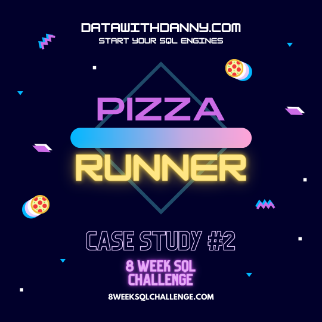
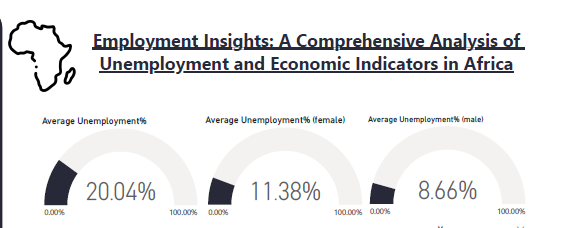

Through this project, I was able to provide value to improve Danny's pizza business by utilizing my skills in SQL. This was achieved as I:
🍕 Developed SQL queries to assess customer preferences, identifying the volume of Vegetarian and Meatlovers pizzas ordered, contributing to targeted marketing strategies...more


Competed in a visualization hackathon with the aim to analyze data, identify patterns, and propose informed, data-driven recommendations that governments and stakeholders can implement to effectively address and reduce unemployment rates, particularly focusing on the African context.

Pulled data about Nathaniel Bassey's tracks from Spotify using Spotify's API. The dashboard describes his tracks to a general audience, especially those musically-inclined.

Cleaned multiple data sets on Global Health indicators, then filtered for African countries. Analysed the data and gave insights and meaningful recomendations to tackling the rising health problems of the continent.
Gathered, assessed and cleaned tweets from @WeRateDogs Twitter account. This was achieved by manipulating the JSON file housing the tweets with their metadata, and using Python libraries; Numpy, Pandas, RegularExpression, Seaborn and PIL.
.jpg)
Analysed user data for a bike-share system based in Greater San Francisco Bay area for trends across timeframes and why they occur. Communicated findings and important metrics using visualisations.

Scraped Twitter for tweets about the #GenZHackFest conference held at Lagos. Analysed opinions of Twitter users about the event, and also words frequently used to describe the event using NLP techniques.